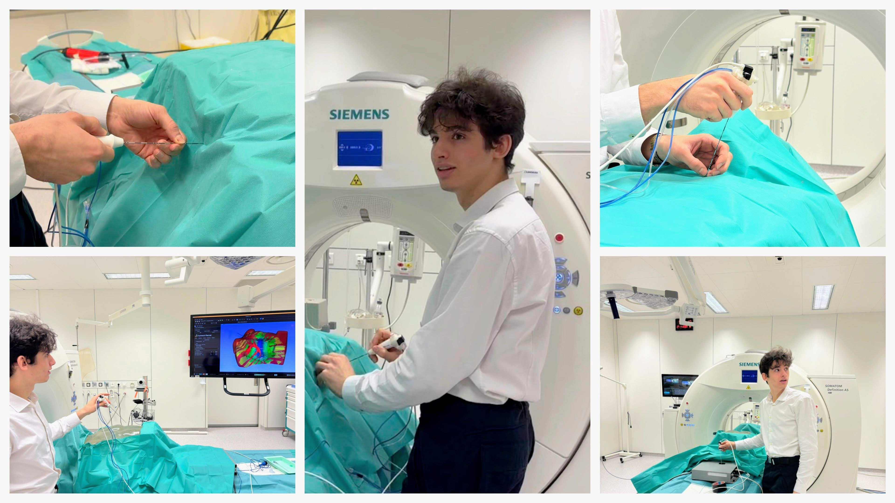

Professional
Thermal ablation, plannable in real time.
PhD at ICube Laboratory, University of Strasbourg — multi-needle planning, intraoperative replanning, ergonomic interfaces.
Research axes
01 · Multi-needle optimization
exhaustive vs. learning-based placement
02 · Intraoperative replanning
adapt the plan mid-procedure
03 · Ergonomic interface
validated with clinicians & novices
Publications
3
MICCAI ×2 · IJCARS ×1
C-NCA
476 fps
12,210 params
HEAT
<1 s
GPU simulation

cryotrack — OR pipeline
Experience
2024 — PhD, ICubeStrasbourg
2023 — R&D internshipsDarmstadt · IHU
2022 — Research, OviedoPeerJ CS
2020 — Landslide, EOSTStrasbourg
2025 · MICCAI, SEOULC-NCA: Chained Neural Cellular Automata for Fast Thermal Ablation EstimationMehtali, Verde, Essert — pp. 156–165E-Poster
2025 · IJCARS 20(6)HEAT: High-Efficiency Simulation for Thermal Ablation TherapyMehtali, Verde, Essert — pp. 1135–1143Journal
2024 · MICCAI, MARRAKESHCryotrack: Planning and Navigation for Computer Assisted CryoablationKrumb, Mehtali, Verde, Mukhopadhyay, Essert — LNCS 15006Conference
CV · Teaching · Contact — all in the footer of the real thing ;)